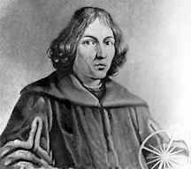

Copérnico, Nicolás (1473-1543), astrónomo polaco, conocido por su teoría según la cual el Sol se encontraba en el centro del Universo y la Tierra, que giraba una vez al día sobre su eje, completaba cada año una vuelta alrededor de él. Este sistema recibió el nombre de heliocéntrico o centrado en el Sol (véase Astronomía; Sistema Solar.
Infancia y educación
Copérnico nació el 19 de febrero de 1473 en la ciudad de Thorn (hoy Toru), en el seno de una familia de comerciantes y funcionarios municipales. El tío materno de Copérnico, el obispo Ukasz Watzenrode, se ocupó de que su sobrino recibiera una sólida educación en las mejores universidades. Copérnico ingresó en la Universidad de Cracovia en 1491, donde comenzó a estudiar la carrera de humanidades; poco tiempo después se trasladó a Italia para estudiar derecho y medicina. En enero de 1497, Copérnico empezó a estudiar derecho canónico en la Universidad de Bolonia, alojándose en casa de un profesor de matemáticas llamado Domenico Maria de Novara, que influiría en sus inquietudes. Este profesor, uno de los primeros críticos sobre la exactitud de la Geografía del astrónomo del siglo II Tolomeo, contribuyó al interés de Copérnico por la geografía y la astronomía. Juntos observaron el 9 de marzo de 1497 la ocultación (eclipse a causa de la Luna) de la estrella Aldebarán.
En 1500, Copérnico se doctoró en astronomía en Roma. Al año siguiente obtuvo permiso para estudiar medicina en Padua (la universidad donde dio clases Galileo, casi un siglo después). Sin haber acabado sus estudios de medicina, se licenció en derecho canónico en la Universidad de Ferrara en 1503 y regresó a Polonia.

El astrónomo polaco Nicolás Copérnico revolucionó la ciencia al postular que la Tierra y los demás planetas giran en torno a un Sol estacionario. Su teoría heliocéntrica (centrada en el Sol) fue desarrollada en los primeros años de la década de 1500, pero sólo se publicó años después. Se oponía a la teoría de Tolomeo, entonces en boga, según la cual el Sol y los planetas giraban alrededor de una Tierra fija. Al principio, Copérnico dudó en publicar sus hallazgos porque temía las críticas científicareligiosa. A pesar de la incredulidad y rechazo iniciales, el sistema de Copérnico pasó a ser el modelo del Universo más ampliamente aceptado a finales del siglo XVII.
El sistema de Copérnico y su influencia
La teoría de Copérnico establecía que la Tierra giraba sobre sí misma una vez al día, y que una vez al año daba una vuelta completa alrededor del Sol. Además afirmaba que la Tierra, en su movimiento rotatorio, se inclinaba sobre su eje (como un trompo). Sin embargo, aún mantenía algunos principios de la antigua cosmología, como la idea de las esferas dentro de las cuales se encontraban los planetas y la esfera exterior donde estaban inmóviles las estrellas. Por otra parte, esta teoría heliocéntrica tenía la ventaja de poder explicar los cambios diarios y anuales del Sol y las estrellas, así como el aparente movimiento retrógrado de Marte, Júpiter y Saturno, y la razón por la que Venus y Mercurio nunca se alejaban más allá de una distancia determinada del Sol. Esta teoría también sostenía que la esfera exterior de las estrellas fijas era estacionaria.
Una de las aportaciones del sistema de Copérnico era el nuevo orden de alineación de los planetas según sus periodos de rotación. A diferencia de la teoría de Tolomeo, Copérnico vio que cuanto mayor era el radio de la órbita de un planeta, más tiempo tardaba en dar una vuelta completa alrededor del Sol. Pero en el siglo XVI, la idea de que la Tierra se movía no era fácil de aceptar y, aunque parte de su teoría fue admitida, la base principal fue rechazada.
Entre 1543 y 1600 Copérnico contó con muy pocos seguidores. Fue objeto de numerosas críticas, en especial de la Iglesia, por negar que la Tierra fuera el centro del Universo. La mayoría de sus seguidores servían a la corte de reyes, príncipes y emperadores. Los más importantes fueron Galileo y el astrónomo alemán Johannes Kepler, que a menudo discutían sobre sus respectivas interpretaciones de la teoría de Copérnico. El astrónomo danés Tycho Brahe llegó, en 1588, a una posición intermedia, según la cual la Tierra permanecía estática y el resto de los planetas giraban alrededor del Sol, que a su vez giraba también alrededor de la Tierra.
Con posterioridad a la supresión de la teoría de Copérnico, tras el juicio eclesiástico a Galileo en 1633, que lo condenó por corroborar su teoría, algunos filósofos jesuitas la siguieron en secreto. Otros adoptaron el modelo geocéntrico y heliocéntrico de Brahe. En el siglo XVII, con el auge de las teorías de Isaac Newton sobre la fuerza de la gravedad, la mayoría de los pensadores en Gran Bretaña, Francia, Países Bajos y Dinamarca aceptaron a Copérnico. Los filósofos puros de otros países de Europa mantuvieron duras posturas contra él durante otro siglo más.